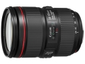

器材库 > 35mm画幅AF变焦镜头 > EF 24-105/4L IS II USM

详细规格
镜头类型
标准变焦镜头
发布日期
2016-08-25
焦距
24mm-105mm
最大光圈
f/4
最小光圈
f/22
视角（对角）
84° - 23°20
镜头结构
17片/12组
非球面镜片
4片
光圈叶片
10片
最近对焦距离
45cm
最大放大倍率
约0.24倍
驱动马达
USM（超声波马达）
滤镜口径
77mm
镜头卡口
Canon EF
防抖
是
颜色
黑色
尺寸
83.5×118mm
重量
795g
备注
防水滴防尘结构
匿名网友2018-07-31 11:074.83 分
操作性 4.00耐用性 5.00性价比 5.00解像力 5.00色彩还原 5.00机械结构 5.00
匿名网友2018-01-31 14:144.92 分
操作性 5.00耐用性 5.00性价比 4.50解像力 5.00色彩还原 5.00机械结构 5.00
fskevin2017-08-16 15:294.17 分
操作性 4.50耐用性 4.50性价比 3.50解像力 3.50色彩还原 4.50机械结构 4.50
海滨幕张2017-07-25 09:094.75 分
操作性 5.00耐用性 5.00性价比 5.00解像力 4.50色彩还原 4.50机械结构 4.50
wmc725312017-06-17 16:584.67 分
操作性 4.50耐用性 5.00性价比 4.50解像力 4.50色彩还原 4.50机械结构 5.00
产品图 / 样片
EF 24-105/4L IS II USM
评测 / 相关文章
- 详细内容 （存档）
- ［行情］佳能24-105mm II拆机头特价 （存档）
- ［试用］泡菜玩转EF24-105mmF4L IS二代 （存档）
- ［资讯］海外曝光佳能EF24-105mmF4LISII测试结果 （存档）
- ［资讯］手动点赞 海外佳能EF 24-105/4L二代测评 （存档）
- ［资讯］佳能EF 24-105/4L IS II USM官方样片 （存档）
- ［资讯］佳能EOS 5D Mark IV及新品真机图赏 （存档）
- ［资讯］与佳能高层一起聊聊新机5D4 （存档）